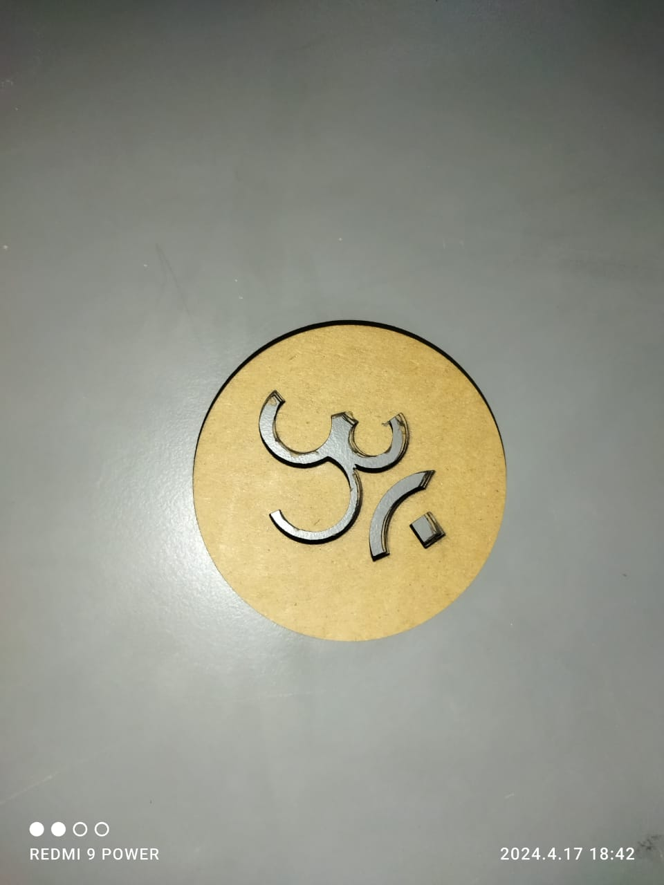
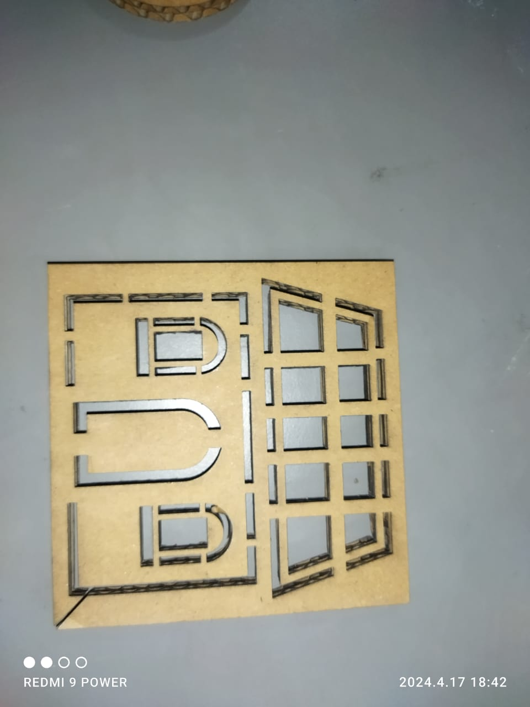
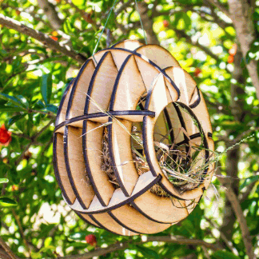
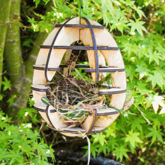
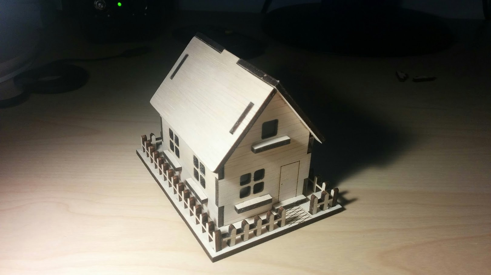

Laser Cutting
Learning about Laser Cutter Machines, Laser Cad and its operations.
Team Members: Rahul Choudhary, Prathamesh Magar, Shrideep Dhore, Vaibhav Chikte
Laser cutting is a highly precise and versatile method of cutting various materials using a focused laser
beam. It has become an essential technology in industries ranging from manufacturing and fabrication to art
and design due to its ability to produce intricate shapes and precise cuts with minimal waste.
Softwares used are Fusion360, Laser CAD
There are Three types of Laser cutting process: Vapourizing Cutting, Sublimation Cutting, Flames Cutting
In Lab Web Are Using Sublimation laser Cutting process.
Precautions while using laser cutting Machines:
Shutdown Laser Button before opening the bonnet.
Ensure proper ventelation.
Inspect the Machine.
Sercure workpieces.
Monitor Cutting process.
Here Are some work Modles Designed by us.


Power: 40, Speed: 40, WorkTime: 2.


Power: 40, Speed: 40, WorkTime: 2.
Machine available in our Lab
SIL Laser cut Acucut 1212

Specifications:
Laser Type - Co2 DC Glass Laser Tube / RF Metal Laser Tube
Laser Power Option Glass Tube – 60/80/100/130/150 Watt
Metal Tube – 40/60/80/100/200 Watt
Wave Length -10.6 μm
Supply Voltage-AC 230 V ±0.05% / AC 415 V ±0.05%
Reposition Accuracy -0.1 mm (Max)
Cutting Speed- 0 ~ 30000 mm/min
Engraving Speed - 0 ~ 64000 mm/min
Cooling - Water Cooled
X, Y Axis - LM Guide Rails SIL Brand
Work Environment - Temp: 0 c ~ 45 c. Humidity: 5% ~ 95%
Acceleration Speed - 1 G
Graphic File Support - PLT, CDR, AI, DWG, DST, DXF, BMP, JPEG, TIFF, GIF, PCX
Steps to be followed while operating machine
Check the temperature
Check the coolant level
Enter the DXF file in Laser CAD Software and make some changes if needed
Align the itemes properly to reduce the wastage of material
Set proper Power, Speed, Worktime and dowload the file on machine
Now set the laser nozzel properly on the sheet corner Origin and Box

Switch On the Laser button And Start the process
3D puzzels Using Laser Cutter
Bird Nests.
The 3d Modles we made were all of 6 mm or 2 mm cardboard sheets.




Power: 40, Speed: 40, Worktime: 3
Doll House



Power: 40, Speed: 40, Worktimes: 3.
War Ship
Here we used 3mm cardboard sheets for making this ships.
We used Power: 38, Speed: 40, Worktime=1